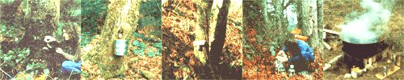

PHOTOS BY THE AUTHOR
[1] A tight-fitting plastic or wooden tube is driven into the 1""- to 2""-deep, 3/4""-diameter hole that has already been drilled in the tree. A small ""collection space"" must be left open between the end of the tube and the back of each hole when the tube is